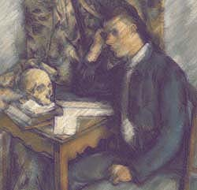

|
Cezanne continues:
And I will easily admit, there was no peace
in contemplating the old ways, only turmoil
and its certain lusts. I wrestled with the classics,
seeking to please the public, but the flesh
of paint speaks to me now, in a clearer
but no less tumultuous rush. Does it hope to find
an ear open to the prism's secret language,
a means to order the world in color and form?
|
 |